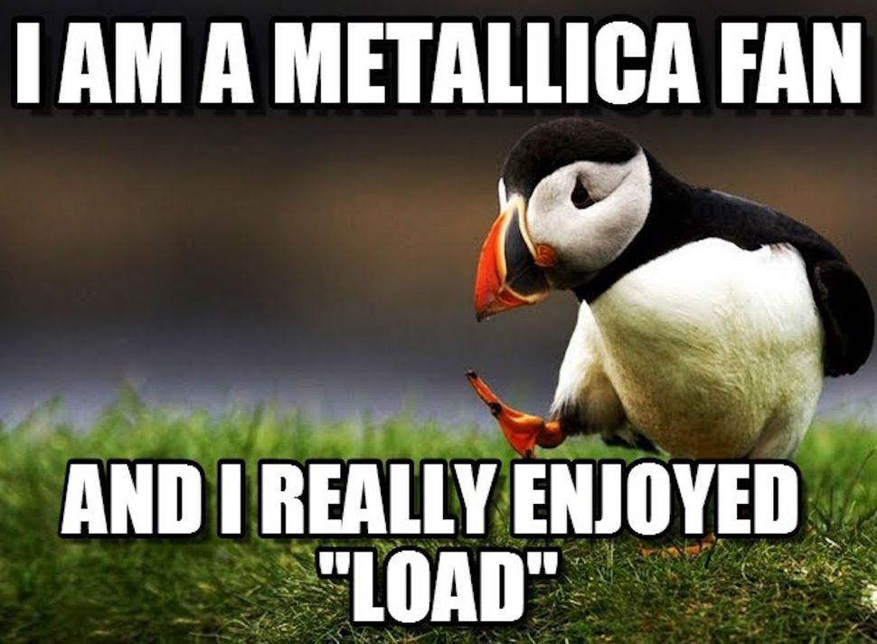

Metallica Fan Site
Made by Ethan Prior
Welcome to my Metallica fansite! Formed in 1981, Metallica has risen to become one of the most successful
music groups of all time! Expect to find in depth information on their history and music on this website!

Website Guide
Click the link to find out more about you're favorite album!
- Kill Em All
- Ride The Lightning
- Master of Puppets
- ...And Justice For All
- Metallica
- Load
- Reload
- St. Anger
- Death Magnetic
- Hardwired...To Self-Destruct
- 72 Seasons
Famous Concerts
- Justice Tours ~ Seattle,Washington 1989
- Concert with AC/DC ~ Moscow, Russia 1991?
- Cunning Stunts ~ ????,Texas 1993
- Live at the Coluseum ~ Nimes,France 2009
%